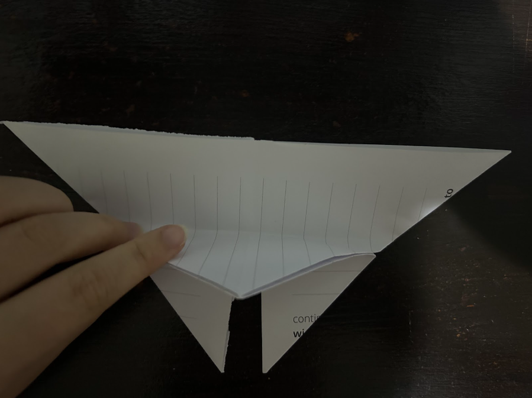

How To Make A Paper Butterfly
Step 1: Start with a square piece of paper.
Step 2: Fold the paper in half diagonally to form a triangle and then crease well, then unfold.
Step 3: Repeat the diagonal fold in the opposite direction and unfold again.
Step 4: Fold the paper in half horizontally to form a rectangle and then crease well, then unfold..
Step 5: Fold the paper in half vertically and unfold.
Step 6: Using the creases as guides, bring the horizontal and vertical creases together, allowing the paper to collapse into a triangle shape with two flaps on each side.
Step 7: With the closed point of the triangle facing down, fold the top layer’s right corner up to meet the top point of the triangle. Repeat with the left corner, bringing it up to meet the top point.
Step 8: Flip the model over and then fold the bottom point up, slightly overlapping the top edge.

Step 9: Flip the middle back to the front and fold the top small triangle into the butterfly.
Step 10: Fold the model in half along the central crease, bringing the wings together.
Step 11: Final result.
Go back to homepage
Scroll to Bottom